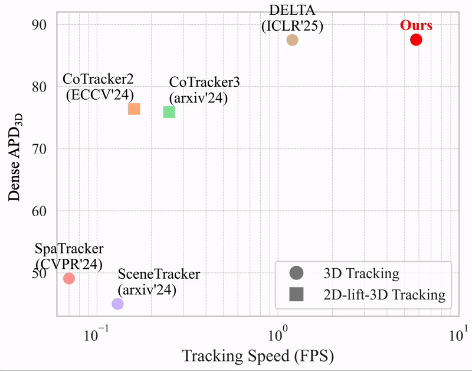

DELTAv2: Accelerating Dense 3D Tracking

DELTAv2 accelerates dense 3D tracking by a factor of 5 compared to DELTA, while achieving comparable performance.
More results of 3D dense tracking can be found here.
Comparison with 2D tracking approaches (3D-lifted with depth): CoTracker and LocoTrack
More results of 3D dense tracking can be found here.